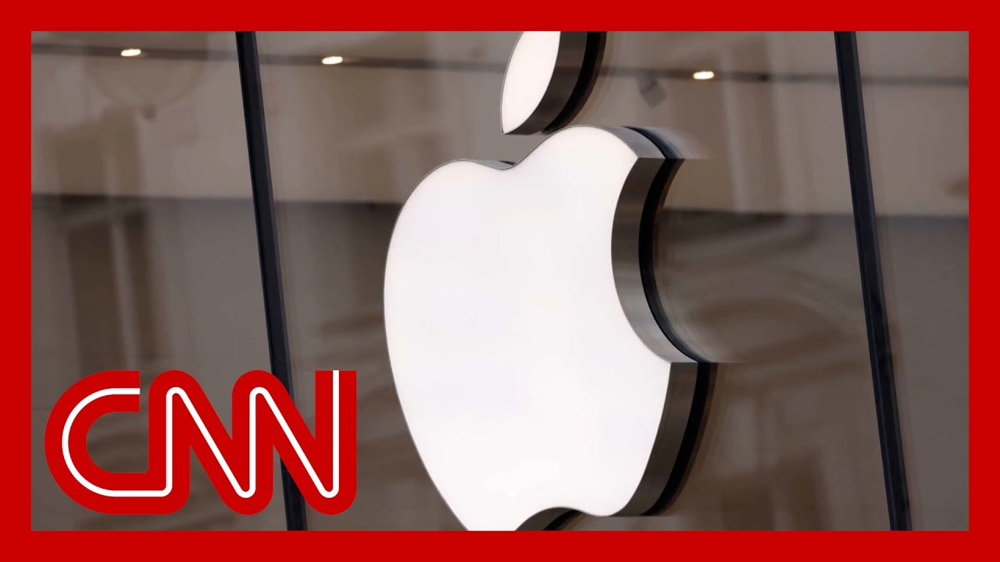

来B站一起耍【Global每日英语简报】
【苹果CEO预估本季度关税或造成9亿美元成本】
Summary: Apple CEO Tim Cook warns Trump's tariffs may cost Apple nearly $1 billion this quarter, with potential worsening effects if continued. GM predicts $4-5 billion tariff costs, while manufacturing faces its worst contraction since early COVID. Despite claims of a "golden age" of US manufacturing, economic uncertainty and demand destruction loom.
摘要： 苹果CEO蒂姆·库克警告称，特朗普关税或使苹果本季度损失近10亿美元，若持续可能恶化。通用汽车预计关税成本达40-50亿美元，制造业面临疫情初期以来最严重萎缩。尽管有人宣称美国制造业进入"黄金时代"，经济不确定性和需求破坏隐现。

⏱️ Estimated Reading Time: 16 min
Apple CEO Tim Cook is now saying just now that Trump's tariffs will add nearly $1 billi to Apple's costs for the current.
苹果CEO蒂姆·库克刚刚表示，特朗普的关税将使苹果当前成本增加近10亿美元。
So that's nearly $1 billion in three months.
也就是说三个月内损失近10亿美元。
Okay.
好的。
That's then continue with the rest of the year.
这种情况将持续到今年剩余时间。
If tariffs continue as they are, things could even get worse as U manufacturing today posted the biggest contraction that we have seen in nearly five.
如果关税维持现状，情况可能更糟，因为美国制造业今日出现近五年来最大萎缩。
That puts you right back to exactly what we've been talking about, r Those worst early days of Covid.
这让我们回到讨论的核心——新冠疫情最糟糕的初期阶段。
But vice President JD Vance stood up today and said I believe that a golden age of American manufacturing started 100 days ago.
但副总统JD·万斯今日宣称，美国制造业的"黄金时代"始于100天前。
I think that the great American manufacturing comeback has begun and the world has started to tak.
我认为美国制造业的伟大复兴已经开始，世界已开始关注。
Meantime, manufacturing giant General Motors today said that the tariffs will cost them 4 to $5 billion over the rest of the year.
与此同时，制造业巨头通用汽车今日表示，关税将在今年剩余时间使其损失40-50亿美元。
And I spoke earlier today with GM CEO Mary Barra about the impact of the tariffs.
今日早些时候，我与通用汽车CEO玛丽·博拉讨论了关税影响。
I know you've spoken to Presiden directly about the tariffs.
我知道你曾直接与总统讨论关税问题。
When is the last time you spoke and it was it this week post his most recent shift.
你最后一次交谈是什么时候？是本周他最近政策转变后吗？
And has he given you the confide that this is it, that you actually know the rules of the game and they're not going to change.
他是否向你保证政策已定，游戏规则不会改变？
Well, I've had I spoke to the president when I last visited the white Ho.
我上次访问白宫时与总统交谈过。
but I've been speaking to many members of his administr multiple times a day over the last several weeks.
但过去几周我每天多次与政府成员沟通。
So, I've had regular communicati really feel that the, the white and the administration are liste to understand the situation.
因此通过定期沟通，我确实感受到白宫和政府正在倾听并理解现状。
Well, if they're listening and u the situation, it might be possible for Vance t not use the words Golden age over the past 100 days, on a day that they came out and announced the biggest contraction U.S. manufacturing in five years, aga since those early days of Covid.
如果他们真的在倾听并理解现状，万斯或许不该在今日——美国制造业公布五年来最大萎缩的日子（堪比疫情初期）——使用"黄金时代"这种表述。
Dan Ives, Peter Tuchman, Jen Psaki and Philip Bump are all he.
丹·艾夫斯、彼得·图赫曼、詹·普萨基和菲利普·邦普都在场。
So dark Apple, that's your purvi $1 billion.
苹果处境黯淡，这就是你们预估的10亿美元损失。
They say it's going to cost for just the first three months of the tariffs.
他们说这只是关税实施前三个月的成本。
McDonald's just had its worst qu since Covid manufacturing.
麦当劳刚经历疫情以来最差季度，制造业也是。
worst number in five years.
五年最差数据。
Kevin Hassett, head of the National Economic Co did say there would be.
国家经济委员会主席凯文·哈塞特确实说过会有。
He said they I'd be sure they'll be news by the end of th regarding a trade deal.
他表示确信本月底前会有贸易协议消息。
I don't I haven't seen it.
但我还没看到。
you know, like Nick said several days ago, there was one that was dun dun dun dun dun.
就像尼克几天前说的，有个协议"噔噔噔"地来了。
we don't know what it is yet.
我们还不知道具体内容。
but when you put all these things together in con and Apple's not putting a number.
但当把这些因素综合起来看，苹果甚至没有给出具体数字。
Look, I think the GM to me is the most striking of all, because when they gave those num it's a 20% cut.
我认为通用汽车的数据最惊人，因为他们给出的数字意味着20%的削减。
They're essentially they're given in 2025.
他们基本上给出了2025年的预测。
Yeah.
是的。
And that's you know, show me that from the white board to everythi we've talked about for the last.
这从白板演示到我们讨论的所有内容都印证了这点。
We're trying to explain, like, what the actual demand destruction is going to do.
我们试图解释实际需求破坏会带来什么影响。
Barra is just dialed in as anyone in terms of understand what this is going to do.
在理解影响方面，博拉比任何人都敏锐。
20% cut demand destruction that we could be 15, 20%.
20%的削减意味着需求破坏可能达到15-20%。
And it goes back to a year where by the way, already fully forecast numbers of how they tho how things were going to be righ.
这要追溯到一年前，当时他们已经完全预测过事情会如何发展。
We don't know what to say.
我们不知该说什么。
We go.
我们继续。
And then they go back to the drawing board and say we're going to cut by 20.
然后他们回到绘图板前说：我们要削减20%。
4 to 5 years is meantime about to build a fac.
与此同时，4-5年内要建工厂。
I mean, the reality is you can talk about golden age.
现实是你可以谈论"黄金时代"。
Tuchman I are going to build a f in new Jersey for a t shirt fact.
图赫曼和我将在新泽西建T恤工厂。
I mean, the point is, is that th let's talk reality versus fictio.
关键在于区分现实与虚构。
You look at GM, that's the math and GM math.
看看通用的数据，这就是通用的算法。
Apple math.
苹果的算法。
Amazon shares down a little bit because they're also pulling back on their forecasts.
亚马逊股价微跌，因为他们也在下调预测。
But let's look at what's so curious is that, you know, we talked abo you can bully.
但有趣的是，我们讨论过你可以威逼。
You can't you can believe the ma but you can't believe the bond m.
你可以相信股市，但不能相信债市。
Look at the market.
看看市场。
Eight days of significant rallies in the ma.
股市连续八天大幅上涨。
We've got nothing back for stock.
我们股票毫无起色。
Right.
没错。
Which is kind of baffling.
这有点令人困惑。
Like where?
比如哪里？
Where is that coming from?
这波涨势从何而来？
Ever since the day that Jim Cram actually said people we need to people need a reason to buy the market again.
自从吉姆·克莱默说"人们需要理由重返市场"那天起。
And that was the day that Trump did the 90 day pause.
那天特朗普宣布了90天暂停期。
I mean, that is a large what I saw headline today that said it was the longest sustained rally on Wall Street since 2022.
我看到今日头条称这是2022年以来华尔街最持久的涨势。
And I know the media tends to be and they love to be.
我知道媒体倾向——他们也喜欢这样。
It's the worst day ever.
"史上最糟一天"。
It's the greatest week and all that kind of stuff.
"最伟大一周"之类的标题。
But that's the guilty as charged.
但这确实是事实。
Oh, I didn't mean, you know, but but you know, the bottom lin that's significant.
我不是那个意思，但关键是这很重要。
So why are they buying the marke.
那么他们为何买入？
Right.
对。
Is it that they want to.
是他们想要。
We were down almost 20% earlier.
我们早前下跌近20%。
Right now we're down maybe 11%.
现在可能只跌11%。
They don't want to be under-invested in in in this month.
他们不想本月投资不足。
I mean there's got to be a reaso.
总得有个原因。
Today we had oh well what we talked about was that the bottom line is if if we don't have a deal, then that the potential of that is so dark.
今天我们讨论的要点是：如果没有协议，前景将非常黯淡。
And what you have to have, like when they have him.
你们必须要有，就像他们拥有他时那样。
But again boy that cried wolf keep talking about deals.
但就像喊"狼来了"的男孩不断谈论协议。
You know what I'm saying?
明白我的意思吗？
When the deal is coming.
协议何时来？
You know what, though?
但你知道吗？
Sorry, I'm getting one thing.
抱歉，我想到一点。
I spoke to my my my jumper on the floor of the exchange today and tried to explain how how does he see this going on when we talk about that is 3 or 4 years out or more for the factories?
今天我询问交易所的联络人，试图了解他认为工厂建设需要3-4年或更久时，事态会如何发展。
And he said, yes, but who's going to be building these factories?
他说："是的，但谁来建这些工厂？"
People are going to be put to work right away to build the factories.
人们将立即投入工厂建设。
And that's the positive.
这是积极面。
That's that's the view that is so positive to them.
这正是他们如此乐观的看法。
All.
所有。
So he is fulfilling his promise.
因此他正在履行承诺。
All right.
好吧。
So and that's important people and some of the supporters, they do see that he's fulfilling.
这对重要人士和支持者很关键，他们确实看到他在履行承诺。
That's how they see it.
他们是这样看的。
Yes.
是的。
Mary Barra today though Gina.
但吉娜，看看今日玛丽·博拉。
And she said that 4 to $5 billio.
她说40-50亿美元。
we were sort of drilling down to put a price on a car.
我们深入分析了一辆车的成本。
And, you know, we could quibble.
你知道，我们可以吹毛求疵。
She could quibble with the analy.
她可能对分析有异议。
Patrick Anderson, who's been tracking this for eve.
长期追踪此事的帕特里克·安德森。
So you could take an Escalade.
以凯雷德为例。
It's about $8,000 for the tariff.
关税约8000美元。
Now, maybe GM eats some of that.
或许通用会承担部分。
They can't eat all of that. Righ.
但不可能全部承担，对吧？
And on the other end of that is someone buying a car.
最终买单的是购车者。
That is a hell of a lot of money.
这真是巨额支出。
This is why over the past few weeks, months, you saw so many people going into the market and saying, I'm going to do this.
这就是为什么过去几周/月，许多人涌入市场说"我现在就买"。
I'm going to buy my car.
"我现在买车"。
Now, I'm going to buy my washer.
"现在买洗衣机"。
Now there is so much fear of the that this is going to inflict on the average American househol.
人们非常恐惧这将给普通美国家庭带来的影响。
and their numbers that we're looking at averages that this is going to cost the average household $3,800 thi.
数据显示普通家庭将为此多支出3800美元。
You just put that in perspective.
换个角度看。
We're talking about a country where 40 to 50% of people still could not cover a $1,000 e.
在这个国家，40-50%的人仍无法承担1000美元紧急支出。
A third of people have no emergency savings.
三分之一的人没有应急储蓄。
I mean, this is paycheck to payc.
这是月光族的状态。
and they're feeling this clothin.
他们已感受到压力。
You go to the grocery store, it's all the good stuff.
去杂货店看看，都是必需品。
It's cheese, it's coffee, it's c.
奶酪、咖啡、谷物。
And and people.
而人们...
And just wait till the inventory and the prices start to run down.
等到库存和价格开始下降时再看。
But Filipino.
但菲律宾...
But we hear from, you know, we hear from Scott Bas.
但我们听到斯科特·巴斯等人说。
you know, sort of when he famous cheap goods is not the American.
他那句名言"廉价商品不是美国特色"。
And Trump saying, well, you can just you can have a couple dollars and they'll cost more, but you know who needs $30?
特朗普说："你可以多花几美元，但谁需要30美元的东西？"
That's that's the political tone that we're hearing.
这就是我们听到的政治论调。
And I think it's certainly refle the fact that Donald Trump is is largely isolated and insulated from these negative effects, you.
这确实反映出特朗普基本隔离于这些负面影响之外。
which we haven't had hit yet.
而我们尚未受到冲击。
Ri.
对吧？
I mean, we're just talking about the invoice shortages haven't actually hit y.
我们讨论的发票短缺还未真正冲击你。
and he is existing in this bubbl.
而他生活在这个泡沫中。
and that, you know, I, I wrote about this this week.
我本周撰文谈到这点。
It is it is unique for a president and it is different for Trump now how insulated he is.
总统如此隔绝是罕见的，特朗普的情况更特殊。
and that even Republicans who already say, okay, this is Trump's economy, but Republicans have been trained very effectively by the conservative media to give him a pass on this stuff.
甚至那些认为"这是特朗普经济"的共和党人，也被保守派媒体训练得对他这些问题视而不见。
And so when he says these things these remarkable things, if you imagine Joe Biden saying that line about the dolls like people would mean tearing their hair.
因此当他说这些惊人言论时——想象拜登说关于玩偶的话——人们会抓狂。
Yeah, right.
没错。
Yeah.
是的。
But he gets a pass on it in the.
但他却能过关。
Negative of that is that it means that everyone else has because he isn't changing things.
负面影响是其他人必须承受，因为他没有改变现状。
And I do think it's worth pointi.
我认为值得指出的是。
We still don't have a consistenc from the white House.
白宫仍缺乏一致性。
Is this manufacturing where they're sticking with the.
制造业政策是否坚持原有路线？
And so you're supposed to build a factory here and they're going to last foreve.
那么你应该在这里建厂，它们将永久存在？
Or is it.
还是说...
We're making deals and we're going to go back to these imports.
我们正在做交易，将恢复这些进口？
They're not even clear on that.
这点他们都不明确。
And so when you talk about uncer to your to your great point, what's the rules of the game and the reality in terms of like these companies, if they actually have to build f.
正如你精彩指出的，当谈到不确定性——游戏规则是什么？对这些公司的现实是，如果他们真要建厂...
4 to 5, what happens in the near.
4-5年后，近期会发生什么？
That's where they cut costs.
那就是他们削减成本的时候。
People get laid off.
人们被裁员。
That's the.
这就是...
And I do think it's worth noting to your point, manufacturing for construction was already surging because of the infrastructure bi.
值得注意的是，由于基建法案，建筑制造业已在激增。
If you look at the numbers, it was already spiking.
数据显示它已经在飙升。
And yet here we are now all of a sudden this is a big priority.
而现在突然这成了重点。
And it only changed what they th about going back to liberation.
这仅改变了他们对回归自由化的看法。
And sorry for one second that we don't we still don't know anything more than we did that day that he came out with the long list of, of the, of the countries in those numbers.
抱歉打断，但我们比那天他公布长串国家名单时知道的并不多。
Right.
对吧？
That was supposed to be etched i.
那本该被铭记。
That was supposed to be the big the big reveal.
那本该是重大披露。
Now he's pushed that back.
现在他推迟了。
We've moved the goalposts.
我们移动了球门柱。
We've done everything except that that was give us anything in reality that we know who's going to benefit, who's going to suffer, what country and how much.
我们做了所有事，除了真正告诉我们谁受益、谁